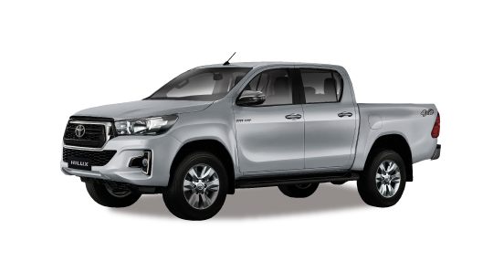
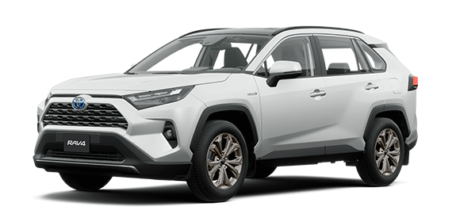
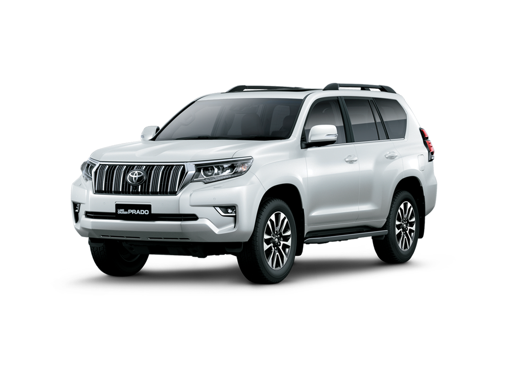

CAMIONETAS
Productos
Toyota Hilux

Las versiones SRX, SRV y SR presentan un diseño frontal más moderno, con cambios en sus ópticas, parrilla y paragolpes. Las versiones SRX y SRV suman faros bi-LED que le dan una mayor impronta visual y tecnológica. Con respecto a la vista lateral se destacan las llantas de aleación para las versiones SRX (265/60R18″), SRV y SR (265/65R17”). En la vista trasera, la Hilux incorpora faros con luces LED, en los que se destaca un diseño interno que genera una imagen de modernidad.
En su interior la nueva Hilux combina dinamismo y modernidad, integrándose el equipo de audio de manera más fluida al panel de instrumentos. Incluso desde el nivel DX ya está disponible el sistema de pantalla táctil de 8″. Por su parte las versiones SRX, se destacan en la parte superior del panel de instrumentos, dos de los parlantes JBL que realzan la calidad de sonido.Respecto al corazón, a las versiones motor 1GD (2.8 litros) ahora tienen 204 CV, incrementando su potencia en un 15% (antes 177). Las versiones equipadas con este motor y junto a transmisión automática de seis marchas tienen ahora 500 Nm de torque máximo. En el caso de las versiones con transmisión manual, el torque se mantiene en 420 Nm, pero en un rango mayor de revoluciones: 1.400 y 3.400 vueltas.
En tanto, el motor 2GD (2.4 litros) con 150 CV y 400 Nm de torque, mantiene su característico balance entre performance y economía de combustible, disponible en las versiones DX y SR con tracción 4×2. Toyota anunció además que ambos motores (1GD y 2GD) obtienen un menor consumo de combustible mejorando la eficiencia térmica y disminuyendo la fricción entre los materiales. Además, ambos motores mejoraron su nivel de refrigeración.
En materia de seguridad la principal novedad es la incorporación del sistema Toyota Safety Sense, un paquete de seguridad activa que incorpora un radar de ondas milimétricas que, combinado con una cámara monocular, pueden detectar una variedad de peligros y alertar al conductor para evitar o mitigar accidentes.Si bien sus componentes primarios (radar de ondas milimétricas y cámara monocular) son los mismos, sus características pueden variar según cada modelo y/o versión. Las versiones SRX cuentan con Sistema de pre-colisión frontal (PCS), que detecta la posibilidad de una colisión, alertando al conductor mediante avisos sonoros y visuales. Si el conductor responde y aplica el freno suavemente, el sistema activará la asistencia de frenado (Brake Assist) para incrementar el poder de frenado y así evitar o mitigar el accidente. Si ante esta situación, el conductor no aplica los frenos, el sistema aplicaría los frenos de emergencia para evitar o mitigar un posible accidente.
Toyota SW4

La nueva SW4 presenta novedades en el diseño exterior e interior, cambios mecánicos y actualizaciones en el equipamiento. A diferencia de lo que ocurrió con la Hilux, la nueva gama de SW4 no altera la gama de versiones que venía ofreciendo el modelo hasta la fecha.Los cambios estéticos de la nueva SW4 son superficiales: la carrocería es prácticamente la misma, solo que con detalles nuevos en la trompa. La alteración más notable está en la parte inferior, en los faros antiniebla y el paragolpes totalmente renovados. La parrilla y los faros cambiaron algunos detalles pero mantienen similitud con el diseño reemplazado.
La gama, como decíamos, sigue conformada por las mismas tres versiones 4x4: una versión de entrada SR de 5 plazas solo con caja automática de seis velocidades, y dos versiones superiores SRX de 7 plazas con opciones manual y automática.
La gran novedad en cuanto a la mecánica es la misma que ofrece la Hilux 2021: el mismo motor turbodiésel 2.8, solo que con la potencia optimizada a 204 cv, en vez de los 177 cv que rendía anteriormente. El torque también subió a 500 nm en el caso de las versiones automáticas, manteniendo los anteriores 450 nm en el caso de la SRX manual.
Estos cambios prometen, según Toyota, una sensible mejora en el ahorro de combustible.
La principal novedad en cuanto a equipamiento es la incorporación de conectividad Android Auto y Google Car Play, una función decididamente estandarizada en el mercado por demanda casi unánime. La pantalla multimedia sigue siendo de 8 pulgadas, solo que con un diseño e interfaz renovadas.
Ambas versiones incorporan sensores de estacionamiento traseros y delanteros. La versión SRX suma butacas delanteras ventiladas, parlantes con audio JLB, además de un nuevo diseño de llantas exclusivo.Por último, las dos versiones SRX suman el software Toyota Safety Sense de asistencias a la conducción. Este incluye sistema de pre-colisión frontal con frenado de emergencia, control de crucero adaptativo y alerta de cambio involuntario de carril.Como ya ocurría con la SW4 pre-restyling, la gama ofrece 7 airbags de serie.
Toyota RAV4

El Toyota RAV4 es un SUV compacto que se comercializa en su quinta generación desde diciembre de 2018. Hablamos de uno de los coches precursores del concepto SUV, destacando en estos momentos por ofrecer una mecánica híbrida gasolina que lo convierten en una de las pocas opciones que brinda el mercado con esta configuración.
Toyota apostó por un diseño completamente nuevo y diferenciado en la última generación del Toyota RAV4. Entre sus puntos más destacables nos encontramos con una parrilla de grandes dimensiones, el uso de trazos y líneas rectas muy marcadas, así como un diseño de pilar "C" muy característico junto a un techo de tipo flotante que puede ser pintado en un color diferente al del resto de la carrocería.
La estética del RAV4 ofrecer una imagen musculosa y de tintes deportivos que se reafirma en el protagonismo de sus pasos de rueda de marcado diseño. Su llegada al mercado supone además una continuación de los patrones estilísticos estrenados por el C-HR.
El Toyota RAV4 solo dispone de un motor híbrido gasolina. En anteriores generaciones ha sido posible encontrar motores diésel y gasolina en su gama, pero en la quinta y actual generación la única configuración posible es una planta híbrida que combina un motor gasolina de 4 cilindros con 2,5 litros de cilindrada y aspiración atmosférica con un motor eléctrico a través de un tren epicicloidal denominada e-CVT. Las baterías son de tipo NiMh.
La potencia máxima de este motor híbrido es de 218 CV si la tracción es 4x2 y 222 CV si la tracción es 4x4. El sistema de tracción total del RAV4 se basa en la adición de un segundo motor eléctrico en el eje trasero. Por lo tanto no existe conexión física entre ejes lo que hace que sea una unidad de gestión electrónica la que se encarga de hacer funcionar un eje u otro en función de las pérdidas de motricidad. Existe un modo "Trail" para las versiones 4x4 que mejora la gestión del agarre de cada rueda.
El diseño interior del RAV4 se caracteriza por el uso de líneas rectas y una disposición de los mandos práctica donde destaca la interfaz multimedia con pantalla táctil flotante sobre el salpicadero con un tamaño de 7". Frente a lo recargado de su diseño exterior, el habitáculo ofrece una imagen más ordenada y de tintes más sobrios. Por el momento solo existe la posibilidad de contar con 5 plazas, aunque es posible que en el futuro se comercialice una versión de 7 asientos. La capacidad de maletero es de 580 litros.
Land Cruiser prado

El Toyota Land Cruiser es un todoterreno de gran tamaño, producido por el fabricante japonés Toyota desde 1951. Actualmente se comercializa la octava generación presentada en 2009 y conocida como Serie 150, que fue actualizada en 2021. El Land Cruiser se caracteriza por ser un todoterreno puro y duro en cuanto a planteamiento, ofreciendo además muchas posibilidades como vehículo polivalente y familiar
El Toyota Land Cruiser fue renovado por última vez en verano de 2021 (más información del Toyota Land Cruiser 2021). Está disponible en dos carrocerías, corta y larga, de 3 y 5 puertas respectivamente. Con un diseño muy clásico y robusto, las líneas del todoterreno más capaz de Toyota apuestan por la funcionalidad antes que por la forma y el diseño. Con 4,85 m de longitud, la solidez está presente en cada detalle, desde el frontal vertical hasta la zaga, cuadrada y plana.
El Toyota Land Cruiser se ofrece con un único motor en todas sus versiones. Se trata de motor turbodiésel de 2.8 litros y cuatro cilindros, con 204 CV de potencia máxima entre 3.000 y 3.400 rpm y un par motor máximo de 500 Nm entre 1.600 y 2.800 rpm. El objetivo prioritario de este motor es una solidez a toda prueba y desarrollar la mayor fuerza posible a bajo régimen.
Todas las versiones del Land Cruiser cuentan con tracción total permanente y reductora, pudiendo escoger entre un cambio manual de 6 relaciones o automático por convertidor de par con 6 marchas. El grupo de transmisión añade además bloqueo del diferencial central y un diferencial Torsen para el eje trasero en las versiones Limited, siendo de bloqueo manual en las versiones VX y VXL.
El Land Cruiser está concebido como un verdadero todoterreno, y por ello es fuera de asfalto donde ofrece lo mejor de sí. Además del planteamiento técnico ya comentado, debemos añadir la presencia de un asistente a la conducción denominado Crawl Control, una herramienta que mejora el avance del Land Cruiser sobre cualquier superficie y condición.
En materia de prestaciones y cotas nos encontramos una altura libre al suelo de 215 mm y una profundidad de vadeo de 700 mm. Las cotas todoterreno (5p) son: 31º de ángulo de ataque, 22º de ángulo ventral y 25º de ángulo de salida.
El interior del Land Cruiser está bien rematado, con materiales de calidad y abundante equipamiento. Una vez más, Toyota apuesta por la solidez y la firmeza, encontrando ciertas licencias al confort y la conectividad. No obstante, el habitáculo del Land Cruiser, con capacidad para hasta 7 ocupantes, es cómodo para viajar en carretera y resistente para la utilización más exigente.
En las versiones tope de gama encontramos detalles premium como los asientos tapizados en piel o inserciones en madera en salpicadero, puertas y volante, que favorecen una atmósfera de cierta exclusividad. Gracias a la última revisión sufrida, uno de los puntos más interesantes del interior es la interfaz multimedia con pantalla táctil de 8". A ello se añade la compatibilidad con Apple CarPlay y Android Auto, además de un buen número de ayudas a la conducción y sistemas de seguridad.